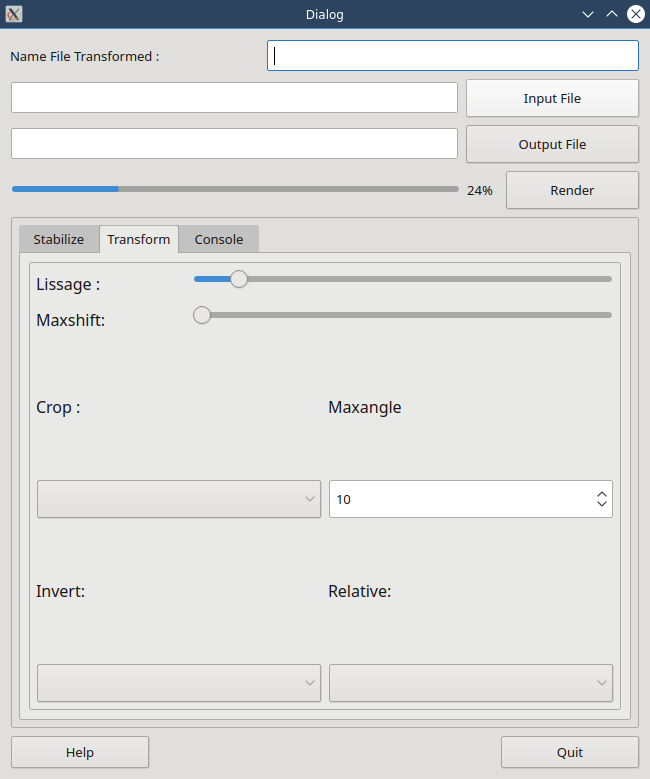

User Manual¶
Voici la partie la plus interressante pour vous et moins pour moi!!!!
voici le plus interressant, non ?
Main Interface¶
Au lancement vous verez ceci
cette application est vraiment un must. Quel travail Georg.
First Things to do¶
eh oui comme tout logiciel il y a des choses à faire. Et la première est d’aller faire un tour dans les préférences, si elles existent. Et vous êtes chanceux car elles existent, du smoins pour celle-là.
Preferences¶
Nous voici dans le vif du sujet.
Tout au début¶
nous avons cet onglet
En second¶
Nous avons ceci.
Enfin¶
Pour terminer, il y aura aussi quelque chose à se mettre sous la dent.
About¶
Cette appli est faite en PyQt.
Credit¶
J’ai développé cette appli sur mon temps libre
Developper Manual¶
Là j’aurai vraiment été » motivé et utiliser beaucoup de temps pour faire cela.
Je recolle ce si beau logo,juste pour le fun.